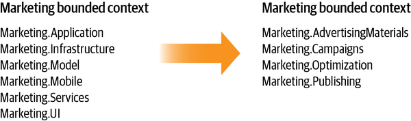
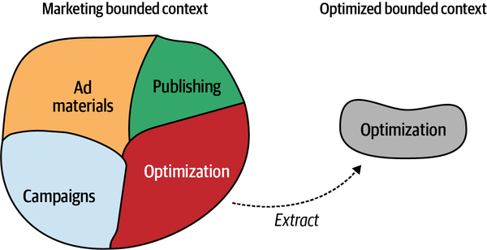
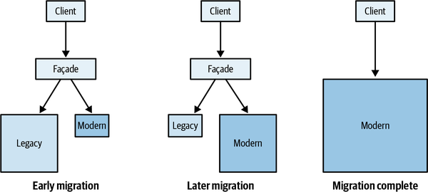
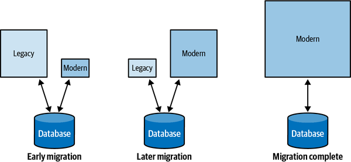

We have covered domain-driven design tools for analyzing business domains, sharing knowledge, and making strategic and tactical design decisions. Just imagine how fun it will be to apply this knowledge in practice. Let’s consider a scenario in which you are working on a greenfield project. All of your coworkers have a strong grasp of domain-driven design, and right from the get-go all are doing their best to design effective models and, of course, are devotedly using the ubiquitous language. As the project advances, the bounded contexts’ boundaries are explicit and effective in protecting the business domain models. Finally, since all tactical design decisions are aligned with the business strategy, the codebase is always in great shape: it speaks the ubiquitous language and implements the design patterns that accommodate the model’s complexity. Now wake up.
Your chances of experiencing the laboratory conditions I just described are about as good as winning the lottery. Of course, it’s possible, but not likely. Unfortunately, many people mistakenly believe that domain-driven design can only be applied in greenfield projects and in ideal conditions in which everybody on the team is a DDD black belt. Ironically, the projects that can benefit from DDD the most are the brownfield projects: those that already proved their business viability and need a shake-up to fight accumulated technical debt and design entropy. Coincidentally, working on such brownfield, legacy, big-balls-of-mud codebases is where we spend most of our software engineering careers.
Another common misconception about DDD is that it’s an all-or-nothing proposition—either you apply every tool the methodology has to offer, or it’s not domain-driven design. That’s not true. It might seem overwhelming to come to grips with all of these concepts, let alone implement them in practice. Luckily, you don’t have to apply all of the patterns and practices to gain value from domain-driven design. This is especially true for brownfield projects, where it’s practically impossible to introduce all the patterns and practices in a reasonable time frame.
In this chapter, you will learn strategies for applying domain-driven design tools and patterns in the real world, including on brownfield projects and in less-than-ideal environments.
Following the order of our exploration of domain-driven design patterns and practices, the best starting point for introducing DDD in an organization is to invest time in understanding the organization’s business strategy and the current state of its systems’ architecture.
First, identify the company’s business domain:
What is the organization’s business domain(s)?
Who are its customers?
What service, or value, does the organization provide to customers?
What companies or products is the organization competing with?
Answering these questions will give you a bird’s-eye view of the company’s high-level goals. Next, “zoom in” to the domain and look for the business building blocks the organization employs to achieve its high-level goals: the subdomains.
A good initial heuristic is the company’s org chart: its departments and other organizational units. Examine how these units cooperate to allow the company to compete in its business domain.
Furthermore, look for the signs of specific types of subdomains.
To identify the company’s core subdomains, look for what differentiates it from its competitors:
Does the company have a “secret sauce” that its competitors lack? For example, intellectual property, such as patents and algorithms designed in-house?
Keep in mind that the competitive advantage, and thus the core subdomains, are not necessarily technical. Does the company possess a nontechnical competitive advantage? For example, the ability to hire top-level personnel, produce a unique artistic design, and so on?
Another powerful yet unfortunate heuristic for core subdomains is identifying the worst-designed software components—those big balls of mud that all engineers hate but the business is unwilling to rewrite from scratch because of the accompanying business risk. The key here is that the legacy system cannot be replaced with a ready-made system—it would be a generic subdomain—and any modification to it entails business risks.
To identify generic subdomains, look for off-the-shelf solutions, subscription services, or integration of open source software. As you learned in Chapter 1, the same ready-made solutions should be available to the competing companies, and those companies leveraging the same solution should have no business impact on your company.
For supporting subdomains, look for the remaining software components that cannot be replaced with ready-made solutions yet do not directly provide a competitive advantage. If the code is in rough shape, it triggers less emotional response from software engineers since it changes infrequently. Thus, the effects of the suboptimal software design are not as severe as for the core subdomains.
You don’t have to identify all of the core subdomains. It won’t be practical or even possible to do so, even for a medium-sized company. Instead, identify the overall structure, but pay closer attention to the subdomains that are most relevant to the software systems you are working on.
Once you are familiar with the problem domain, you can continue to investigate the solution and its design decisions. First, start with the high-level components. These are not necessarily bounded contexts in the DDD sense, but rather boundaries used to decompose the business domain into subsystems.
The characteristic property to look for is the components’ decoupled lifecycles. Even if the subsystems are managed in the same source control repository (mono-repo) or if all the components reside in a single monolithic codebase, check which can be evolved, tested, and deployed independently from the others.
For each high-level component, check which business subdomains it contains and what technical design decisions were taken: what patterns are used to implement the business logic and define the component’s architecture?
Does the solution fit the complexity of the problem? Are there areas where more elaborate design patterns are needed? Conversely, are there any subdomains where it’s possible to cut corners or use existing, off-the-shelf solutions? Use this information to make smarter strategic and tactical decisions.
Use the knowledge of the high-level components to chart the current design’s context map, as though these high-level components were bounded contexts. Identify and track the relationships between the components in terms of bounded context integration patterns.
Finally, analyze the resultant context map and evaluate the architecture from a domain-driven design perspective. Are there suboptimal strategic design decisions? For example:
Multiple teams working on the same high-level component
Duplicate implementations of core subdomains
Implementation of a core subdomain by an outsourced company
Friction because of frequently failing integration
Awkward models spreading from external services and legacy systems
These insights are a good starting point for planning the design modernization strategy. But first, given this more in-depth knowledge of both the problem (business domain) and the solution (current design) spaces, look for lost domain knowledge. As we discussed in Chapter 11, knowledge of the business domain can get lost for various reasons. The problem is widespread and acute in core subdomains, where the business logic is both complex and business critical. If you encounter such cases, facilitate EventStorming sessions to try to recover the knowledge. Also, use the EventStorming session as the foundation for cultivating a ubiquitous language.
The “big rewrite” endeavors, in which the engineers are trying to rewrite the system from scratch, this time designing and implementing the whole system correctly, are rarely successful. Even more rarely does management support such architectural makeovers.
A safer approach to improving the design of existing systems is to think big but start small. As Eric Evans says, not all of a large system will be well designed. That’s a fact we have to accept, and therefore we must strategically decide where to invest in terms of modernization efforts. A prerequisite for making this decision is to have boundaries dividing the system’s subdomains. The boundaries don’t have to be physical, making each subdomain a full-fledged bounded context. Instead, start by ensuring that at least the logical boundaries (namespace, modules, and packages, depending on the technology stack) are aligned with the subdomains’ boundaries, as shown in Figure 13-1.

Adjusting the system’s modules is a relatively safe form of refactoring. You are not modifying the business logic, just repositioning the types in a more well-organized structure. That said, ensure that references by full type names, such as the dynamic loading of libraries, reflection, and so on, are not breaking.
In addition, keep track of the subdomains’ business logic implemented in different codebases; stored procedures in a database, serverless functions, and so on. Make sure to introduce the new boundaries in those platforms as well. For instance, if some of the logic is handled in the database’s stored procedures, either rename the procedures to reflect the module they belong to or introduce a dedicated database schema and relocate the stored procedures.
As we discussed in Chapter 10, it can be risky to prematurely decompose the system into the smallest bounded contexts possible. We will discuss bounded contexts and microservices in more detail in the next chapter. For now, look for where the most value can be gained by turning the logical boundaries into physical boundaries. The process of extracting a bounded context(s) by turning a logical boundary into a physical one is shown in Figure 13-2.
Questions to ask yourself:
Are multiple teams working on the same codebase? If so, decouple the development lifecycles by defining bounded contexts for each team.
Are conflicting models being used by the different components? If so, relocate the conflicting models into separate bounded contexts.

When the minimum required bounded contexts are in place, examine the relationships and integration patterns between them. See how the teams working on different bounded contexts communicate and collaborate. Especially when they are communicating through ad hoc or shared-kernel–like integration, do the teams have shared goals and adequate collaboration levels?
Pay attention to problems that the context integration patterns can address:
First and foremost, from a tactical standpoint, look for the most “painful” mismatches in business value and implementation strategies, such as core subdomains implementing patterns that don’t match the complexity of the model—transaction script or active record. These system components that directly impact the success of the business have to change the most often, yet are painful to maintain and evolve due to poor design.
A prerequisite to the successful modernization of a design is the domain knowledge and effective model of the business domain. As I have mentioned several times throughout this book, domain-driven design’s ubiquitous language is essential for achieving knowledge and building an effective solution model.
Don’t forget domain-driven design’s shortcut for gathering domain knowledge: EventStorming. Use EventStorming to build a ubiquitous language with the domain experts and explore the legacy codebase, especially if the codebase is an undocumented mess that no one truly understands. Gather everyone related to its functionality and explore the business domain. EventStorming is a fantastic tool for recovering domain knowledge.
Once you are equipped with the domain knowledge and its model(s), decide which business logic implementation patterns best suit the business functionality in question. As a starting point, use the design heuristics described in Chapter 10. The next decision you have to make concerns the modernization strategy: gradually replacing whole components of the system (the strangler pattern), or gradually refactoring the existing solution.
Strangler fig, shown in Figure 13-3, is a family of tropical trees that share a peculiar growth pattern: stranglers grow over other trees—host trees. A strangler begins its life as a seed in the upper branches of the host tree. As the strangler grows, it makes its way down until it roots in the soil. Eventually, the strangler grows foliage that overshadows the host tree, leading to the host tree’s death.
The strangler migration pattern is based on the same growth dynamic as the tree the pattern is named after. The idea is to create a new bounded context—the strangler—use it to implement new requirements, and gradually migrate the legacy context’s functionality into it. At the same time, except for hotfixes and other emergencies, the evolution and development of the legacy bounded context stops. Eventually, all functionality is migrated to the new bounded context—the strangler— and following the analogy, leading to the death of the host—the legacy codebase.
Usually, the strangler pattern is used in tandem with the façade pattern: a thin abstraction layer that acts as the public interface and is in charge of forwarding the requests to processing either by the legacy or the modernized bounded context. When migration completes—that is, when the host dies—the façade is removed as it is no longer necessary (see Figure 13-4).

Contrary to the principle that each bounded context is a separate subsystem, and thus cannot share its database with other bounded contexts, the rule can be relaxed when implementing the strangler pattern. Both the modernized and the legacy contexts can use the same database for the sake of avoiding complex integration between the contexts, which in many cases can entail distributed transactions—both contexts have to work with the same data, as shown in Figure 13-5.
The condition for bending the one-database-per-bounded-context rule is that eventually, and better sooner than later, the legacy context will be retired, and the database will be used exclusively by the new implementation.

An alternative to strangler-based migration is modernizing the legacy codebase in place, also called refactoring.
In Chapter 11, you learned the various aspects of migrating tactical design decisions. However, there are two nuances to be aware of when modernizing a legacy codebase.
First, small incremental steps are safer than a big rewrite. Therefore, don’t refactor a transaction script or active record straight to an event-sourced domain model. Instead, take the intermediate step of designing state-based aggregates. Invest the effort in finding effective aggregate boundaries. Ensure that all related business logic resides within those boundaries. Going from state-based to event-sourced aggregates will be orders of magnitude safer than discovering wrong transactional boundaries in an event-sourced aggregate.
Second, following the same reasoning of taking small incremental steps, refactoring to a domain model doesn’t have to be an atomic change. Instead, you can gradually introduce the elements of the domain model pattern.
Start by looking for possible value objects. Immutable objects can significantly reduce the solution’s complexity, even if you are not using a full-blown domain model.
As we discussed in Chapter 11, refactoring active records into aggregates doesn’t have to be done overnight. It can be done in gradual steps. Start by gathering the related business logic. Next, analyze the transactional boundaries. Are there decisions that require strong consistency but operate on eventually consistent data? Or conversely, does the solution enforce strong consistency where eventual consistency would suffice? When analyzing the codebase, don’t forget that these decisions are driven by business, not technology, concerns. Only after a thorough analysis of the transactional requirements should you design the aggregate’s boundaries.
Finally, when necessary as you’re refactoring legacy systems, protect the new codebase from old models using an anticorruption layer, and protect the consumers from changes in the legacy codebase by implementing an open-host service and exposing a published language.
As we discussed in this chapter’s introduction, applying domain-driven design is not an all-or-nothing endeavor. You don’t have to apply every tool DDD has to offer. For example, for some reason, the tactical patterns might not work for you. Maybe you prefer to use other design patterns because they work better in your specific domain, or just because you find other patterns more effective. That’s totally fine!
As long as you analyze your business domain and its strategy, look for effective models to solve particular problems, and most importantly, make design decisions based on the business domain’s needs: that’s domain-driven design!
It’s worth reiterating that domain-driven design is not about aggregates or value objects. Domain-driven design is about letting your business domain drive software design decisions.
When I present on this topic at technology conferences, there is one question that I’m asked almost every time: “That all sounds great, but how do I ‘sell’ domain-driven design to my team and management?” That’s an extremely important question.
Selling is hard, and personally, I hate selling. That said, if you think about it, designing software is selling. We are selling our ideas to the team, to management, or to customers. However, a methodology that covers such a wide range of design decision aspects, and even reaches outside the engineering zone to involve other stakeholders, can be extremely hard to sell.
Management support is essential for making any considerable changes in an organization. However, unless the top-level managers are already familiar with domain-driven design or are willing to invest time to learn the business value of the methodology, it’s not top of mind for them, especially because of a seemingly large shift in the engineering process that DDD entails. Fortunately, however, it doesn’t mean you can’t use domain-driven design.
Make domain-driven design a part of your professional toolbox, not an organizational strategy. DDD’s patterns and practices are engineering techniques, and since software engineering is your job, use them!
Let’s see how to incorporate DDD into your day-to-day job without making much ado about it.
The use of a ubiquitous language is the cornerstone practice of domain-driven design. It is essential for domain knowledge discovery, communication, and effective solution modeling.
Luckily, this practice is so trivial that it’s borderline common sense. Listen carefully to the language the stakeholders use when they speak about the business domain. Gently steer the terminology away from technical jargon and toward its business meaning.
Look for inconsistent terms and ask for clarifications. For example, if there are multiple names for the same thing, look for the reason. Are those different models intertwined in the same solution? Look for contexts and make them explicit. If the meaning is the same, follow common sense and ask for one term to be used.
Also, communicate with domain experts as much as possible. These efforts shouldn’t necessarily require formal meetings. Watercoolers and coffee breaks are great communication facilitators. Speak with the domain experts about the business domain. Try using their language. Look for difficulties in understanding and ask for clarifications. Don’t worry—domain experts are usually happy to collaborate with engineers who are sincerely interested in learning about the problem domain!
Most importantly, use the ubiquitous language in your code and all project-related communication. Be patient. Changing the terminology that has been used in an organization for a while will take time, but eventually, it will catch on.
When exploring possible decomposition options, resolve to the principles behind what the bounded context pattern is based on:
Why is it better to design problem-oriented models instead of a single model for all use cases? Because “all-in-one” solutions are rarely effective for anything.
Why can’t a bounded context host conflicting models? Because of the increased cognitive load and solution complexity.
Why is it a bad idea for multiple teams to work on the same codebase? Because of friction and hindered collaboration between the teams.
Use the same reasoning for bounded context integration patterns: make sure you understand the problem each pattern is supposed to solve.
When discussing tactical design patterns, don’t appeal to authority: “Let’s use an aggregate here because the DDD book says so!” Instead, appeal to logic. For example:
Why are explicit transactional boundaries important? To protect the consistency of the data.
Why can’t a database transaction modify more than one instance of an aggregate? To ensure that the consistency boundaries are correct.
Why can’t an aggregate’s state be modified directly by an external component? To ensure that all the related business logic is colocated and not duplicated.
Why can’t we offload some of the aggregate’s functionality to a stored procedure? To make sure that no logic is duplicated. Duplicated logic, especially in logically and physically distant components of a system, tends to go out of sync and lead to data corruption.
Why should we strive for small aggregate boundaries? Because wide transactional scope will both increase the complexity of the aggregate and negatively impact the performance.
Why, instead of event sourcing, can’t we just write events to a logfile? Because there are no long-term data consistency guarantees.
Speaking of event sourcing, when the solution calls for an event-sourced domain model, implementation of this pattern might be hard to sell. Let’s take a look at a Jedi mind trick that can help with this.
Despite its many advantages, event sourcing sounds too radical for many people. As with everything we’ve discussed in this book, the solution is to let the business domain drive this decision.
Talk to domain experts. Show them the state- and event-based models. Explain the differences and the advantages offered by event sourcing, especially with regard to the dimension of time. More often than not, they will be ecstatic with the level of insight it provides and will advocate event sourcing themselves.
And while interacting with the domain experts, don’t forget to work on the ubiquitous language!
In this chapter, you learned various techniques for leveraging domain-driven design tools in real-life scenarios: when working on brownfield projects and legacy codebases, and not necessarily with a team of DDD experts.
As in greenfield projects, always start by analyzing the business domain. What are the company’s goals and its strategy for achieving them? Use the organizational structure and existing software design decisions to identify the organization’s subdomains and their types. With this knowledge, plan the modernization strategy. Look for pain points. Look to gain the most business value. Modernize legacy code either by refactoring or by replacing the relevant components. Either way, do it gradually. Big rewrites entail more risk than business value!
Finally, you can use domain-driven design tools even if DDD is not widely adopted in your organization. Use the right tools, and when discussing them with colleagues, always use the logic and principles behind each pattern.
This chapter concludes our discussion of domain-driven design on its own. In Part IV, you will learn about the interplay of DDD with other methodologies and patterns.
Assume you want to introduce domain-driven design tools and practices to a brownfield project. What is going to be your first step?
Refactor all business logic to the event-sourced domain model.
Analyze the organization’s business domain and its strategy.
Improve the system’s components by ensuring that they follow the principles of proper bounded contexts.
It’s impossible to use domain-driven design in a brownfield project.
In what ways does the strangler pattern contradict some of the core principles of domain-driven design during the migration process? Select all that apply.
Multiple bounded contexts are using a shared database.
If the modernized bounded context is a core subdomain, its implementation gets duplicated in the old and the new implementations.
Multiple teams are working on the same bounded context.
Why is it generally not a good idea to refactor active-record-based business logic straight into the event-sourced domain model? Select all that apply.
A state-based model makes it easier to refactor aggregates’ boundaries during the learning process.
It’s safer to introduce big changes gradually.
When you’re introducing the aggregate pattern, your colleague asks why the aggregate can’t just reference all the possible entities and thus make it possible to traverse the whole business domain from one place. How do you answer the question?